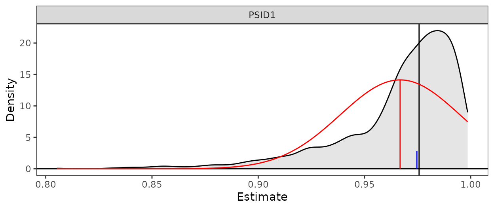
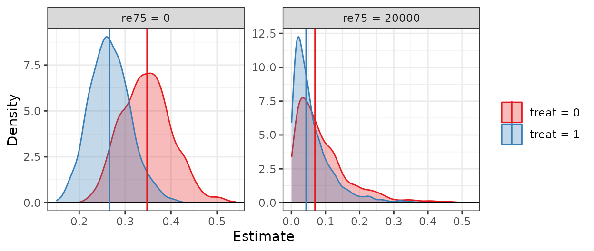
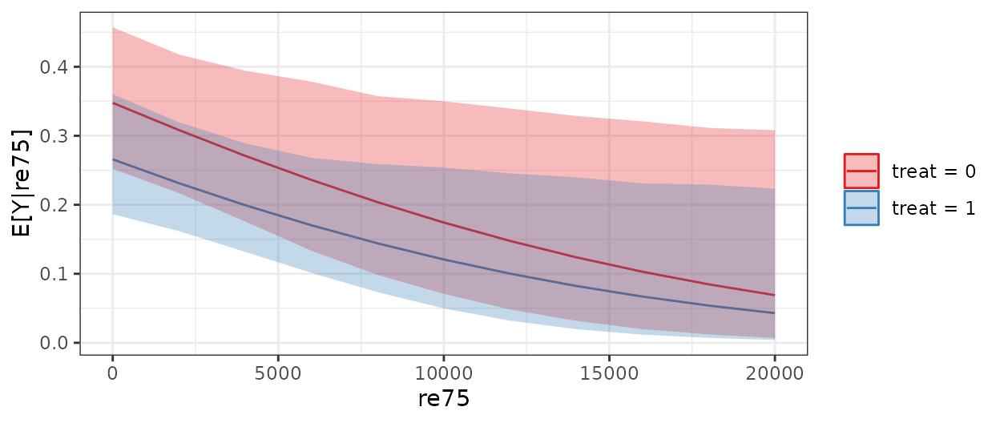
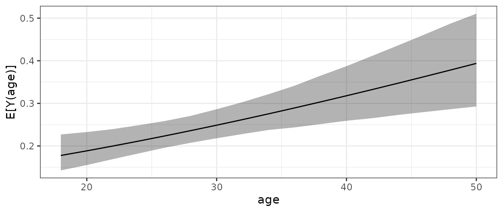

Introduction
Although regression models are frequently used in empirical research
to study relationships among variables, often the quantity of
substantive interest is not one of the coefficients of the model, but
rather a quantity derived from the coefficients, such as predicted
values or average marginal effects. The usual method for estimating the
uncertainty of the derived quantities is an approximation known as the
“delta method”. The delta method involves two approximations: 1) that
the variance of the derived quantity can be represented as a first-order
Taylor series, and 2) that the resulting estimate is normally
distributed1.In many cases, especially with nonlinear
models, these approximation can fail badly. clarify
implements an alternative to the delta method—simulation-based
inference—which involves simulating the sampling distributions of the
derived quantities.
The methodology clarify relies on is described in King, Tomz, and Wittenberg (2000). Similar
functionality exists in the clarify package in Stata (Tomz, Wittenberg, and King 2003) and used to be
available in the Zelig R package (Imai, King, and Lau 2008) .
clarify provides additional flexibility by allowing the
user to request any derived quantity, in addition to providing shortcuts
for common quantities, including predictions at representative values,
average marginal effects, and average dose-response functions (described
below). clarify relies on and can be seen as a companion to
the marginaleffects package, which offers similar
functionality but uses the delta method for its calculations.
Using clarify
There are four steps to using clarify:
Fit the model to the data using modeling functions in supported packages
Use
sim()to take draws from the sampling distribution of the estimated model coefficientsUse
sim_apply()or its wrapperssim_setx(),sim_ame(), andsim_adrf()to compute derived quantities using each simulated set of coefficientsUse
summary()andplot()to summarize and visualize the distribution of the derived quantities and perform inference on them
In the sections below, we’ll describe how to implement these steps in
detail. First, we’ll load clarify using
library().
For a running example, we’ll use the lalonde dataset in
the MatchIt package, which contains data on 614
participants enrolled in a job training program or sampled from a
survey. The treatment variable is treat and the outcome is
re78, and all other variables are confounders. Although the
original intent was to estimate the effect of treat on
re78, we’ll use it more generally to demonstrate all of
clarify’s capabilities. In addition, we’ll use a
transformation of the outcome variable to demonstrate applications to
nonlinear models.
data("lalonde", package = "MatchIt")
lalonde$re78_0 <- ifelse(lalonde$re78 == 0, 1, 0)
head(lalonde)
#> treat age educ race married nodegree re74 re75 re78 re78_0
#> NSW1 1 37 11 black 1 1 0 0 9930.0460 0
#> NSW2 1 22 9 hispan 0 1 0 0 3595.8940 0
#> NSW3 1 30 12 black 0 0 0 0 24909.4500 0
#> NSW4 1 27 11 black 0 1 0 0 7506.1460 0
#> NSW5 1 33 8 black 0 1 0 0 289.7899 0
#> NSW6 1 22 9 black 0 1 0 0 4056.4940 01. Fitting the model
The first step is to fit the model. clarify can operate
on a large set of models (those supported by
marginaleffects), including generalized linear models,
multinomial models, multivariate models, and instrumental variable
models, many of which are available in other R packages. Even if
clarify does not offer direct support for a given model,
there are ways to use its functionality regardless (explained in more
detail below).
Because we are computing derived quantities, it is not critical to parameterize the model in such a way that the coefficients are interpretable. Below, we’ll fit a probit regression model for the outcome given the treatment and confounders.
fit <- glm(re78_0 ~ treat + age + educ + race + married +
nodegree + re74 + re75, data = lalonde,
family = binomial("probit"))Coefficients in probit regression do not have a straightforward interpretation, but that’s okay; our quantities of interest can be expressed as derived quantities–functions of the model parameters, such as predictions, counterfactual predictions, and averages and contrasts of them.
2. Drawing from the coefficient distribution
After fitting the model, we will use sim() to draw
coefficients from their sampling distribution. The sampling distribution
is assumed to be multivariate normal or multivariate t with appropriate
degrees of freedom, with a mean vector equal to the coefficient vector
and a covariance matrix equal to the asymptotic covariance matrix
extracted from the model. The arguments to sim() are listed
below:
sim(fit = , n = , vcov = , coefs = , dist = )fit– the fitted model object, the output of the call to the fitting function (e.g.,glm())n– the number of simulated values to draw; by default, 1000. More values will yield more replicable and precise results at the cost of speed.vcov– either the covariance matrix of the estimated coefficients, a function used to extract it from the model (e.g.,sandwich::vcovHC()for the robust covariance matrix), or a string or formula giving a code for extracting the covariance matrix (seemarginaleffects::get_vcov()for details). If left unspecified, the default covariance matrix will be extracted from the model.coefs– either a vector of coefficients to be sampled or a function to extract them from the fitted model. If left unspecified, the default coefficients will be extracted from the model. Typically this does not need to be specified.dist– the name of the distribution from which to draw the sampled coefficients. Can be"normal"for a normal distribution ort(#)for a t-distribution, where#represents the degrees of freedom. If left unspecified,sim()will decide on which distribution makes sense given the characteristics of the model (the decision is made byinsight::get_df()withtype = "wald"). Typically this does not need to be specified.
If your model is not supported by clarify, you can omit
the fit argument and just specify the vcov and
coefs argument, which will draw the coefficients from the
distribution named in dist ("normal" by
default).
sim() uses a random number generator to draw the sampled
coefficients from the sampling distribution, so a seed should be set
using set.seed() to ensure results are replicable across
sessions.
The output of the call to sim() is a
clarify_sim object, which contains the sampled
coefficients, the original model fit object if supplied, and the
coefficients and covariance matrix used to sample.
# Drawing simulated coefficients using an HC2 robust
# covariance matrix
s <- sim(fit, vcov = "HC2")
s
#> A `clarify_sim` object
#> - 10 coefficients, 1000 simulated values
#> - sampled distribution: multivariate normal
#> - original fitting function call:
#>
#> glm(formula = re78_0 ~ treat + age + educ + race + married +
#> nodegree + re74 + re75, family = binomial("probit"), data = lalonde)3. Computing derived quantities
After sampling the coefficients, we will compute derived quantities
on each set of sampled coefficient and store the result, which
represents a “posterior” distribution of the derived quantity. The core
functionality is provided by sim_apply(), which accepts a
clarify_sim object from sim() and a function
to compute and return one or more derived quantities, then applies that
function to each set of simulated coefficients. The arguments to
sim_apply() are below:
sim_apply(sim = , FUN = , verbose = , cl = , ...)sim– aclarify_simobject; the output of a call tosim().FUN– a function that takes in either a model fit object or a vector of coefficients and returns one or more derived quantities. The first argument should be namedfitto take in a model fit object orcoefsto take in coefficients.verbose– whether to display a progress bar.cl– an argument that controls parallel processing, which can be the number of cores to use or a cluster object resulting fromparallel::makeCluster()....- further arguments toFUN.
The FUN argument can be specified in one of two ways:
either as a function that takes in a model fit object or a function that
takes in a vector of coefficients. The latter will always work but the
former only works for supported models. When the function takes in a
model fit object, sim_apply() will first insert each set of
sampled coefficients into the model fit object and then supply the
modified model to FUN.
For example, let’s say our derived quantity of interest is the
predicted probability of the outcome for participant PSID1. We would
specified our FUN function as follows:
sim_fun1 <- function(fit) {
predict(fit, newdata = lalonde["PSID1",], type = "response")
}The fit object supplied to this function will be one in
which the coefficients have been set to their values in a draw from
their sampling distribution as generated by sim(). We then
supply the function to sim_apply() to simulate the sampling
distribution of the predicted value of interest:
est1 <- sim_apply(s, FUN = sim_fun1, verbose = FALSE)
est1
#> A `clarify_est` object (from `sim_apply()`)
#> - 1000 simulated values
#> - 1 quantity estimated:
#> PSID1 0.02377322The resulting clarify_est object contains the simulated
estimates in matrix form as well as the estimate computed on the
original coefficients. We’ll examine the sampling distribution shortly,
but first we’ll demonstrate computing a derived quantity from the
coefficients directly.
The race variable is a factor, and the
black category is used as the reference level, so it’s not
immediately clear whether there is a difference between the coefficients
racehispan and racewhite, which represent the
non-reference categories hispan and white. To
compare these two directly, we can use sim_apply() to
compute a derived quantity that corresponds to the difference between
them.
sim_fun2 <- function(coefs) {
hispan <- unname(coefs["racehispan"])
white <- unname(coefs["racewhite"])
c("w - h" = white - hispan)
}
est2 <- sim_apply(s, FUN = sim_fun2, verbose = FALSE)
est2
#> A `clarify_est` object (from `sim_apply()`)
#> - 1000 simulated values
#> - 1 quantity estimated:
#> w - h 0.1089068The function FUN can be arbitrarily complicated and
return as many derived quantities as you want, though the slower each
run of FUN is, the longer it will take to simulate the
derived quantities. Using parallel processing by supplying an argument
to cl can sometimes dramatically speed up evaluation.
There are several functions in clarify that serve as
convenience wrappers for sim_apply() to automate some
common derived quantities of interest. These include
sim_setx()– computing predicted values and first differences at representative or user-specified values of the predictorssim_ame()– computing average marginal means, contrasts of average marginal means, and average marginal effectssim_adrf()– computing average dose-response functions and average marginal effects functions
These are described in their own sections below. In addition, there
are functions that have methods for simabsed_est objects,
including cbind() for combining two
clarify_est objects together and transform()
for computing quantities that are derived from the already-computed
derived quantities. These are also described in their own sections
below.
4. Summarize and visualize the simulated distribution
To examine the uncertainty around and perform inference on our
estimated quantities, we can use plot() and
summary() on the clarify_est object.
plot() displays a density plot of the resulting
estimates across the simulations, with markers identifying the point
estimate (computed using the original coefficients) and, optionally,
uncertainty bounds (which function like confidence or credible interval
bounds). The arguments to plot() are below:
plot(x = , parm = , ci = , level = , method = )x– theclarify_estobject (the output of a call tosim_apply()).parm– the names or indices of the quantities to be plotted if more than one was estimated insim_apply(); if unspecified, all will be plotted.ci– whether to display lines at the uncertainty bounds. The default isTRUEto display them.level– ifciisTRUE, the desired two-sided confidence level. The default is .95 so that that the bounds are at the .025 and .975 quantiles whenmethod(see below) is"quantile".method– ifciisTRUE, the method used to compute the bounds. Allowable methods include a Normal approximation ("wald") or using the quantiles of the resulting distribution ("quantile"). The Normal approximation involves multiplying the standard deviation of the estimates (i.e., which functions like the standard error of the sampling distribution) by the critical Z-statistic computed using(1-level)/2to create a symmetric margin of error around the point estimate. The default is"quantile"to instead use quantile-based bounds, which are more appropriate when the distribution is non-Normal. However, quantile-based bounds may require more simulations to stabilize.
Below, we plot the first estimate we computed above, the predicted probability for participant PSID1:
plot(est1)
From the plot, we can see that the distribution of simulated values
is non-Normal and asymmetrical, with no values falling below 0 because
the outcome is a predicted probability. Given its non-Normality, the
quantile-based bounds are clearly more appropriate, as the bounds
computed from the Normal approximation would be outside the bounds of
the estimate. The plot itself is a ggplot object that can
be modified using ggplot2 syntax.
We can use summary() to display the value of the point
estimate, the uncertainty bounds, and other statistics that describe the
distribution of estimates. The arguments to summary() are
below:
summary(object = , parm = , level = , method = , null = )object– theclarify_estobject (the output of a call tosim_apply()).parm– the names or indices of the quantities to be displayed if more than one was estimated insim_apply(); if unspecified, all will be displayed.level– the desired two-sided confidence level. The default is .95 so that that the bounds are at the .025 and .975 quantiles when method (see below) is"quantile".method– the method used to compute the uncertainty bounds. Allowable methods include a Normal approximation ("wald") or using the quantiles of the resulting distribution ("quantile"). Seeplot()above.null– an optional argument specifying the null value in a hypothesis test for the estimates. If specified, a p-value will be computed using either a standard Z-test (ifmethodis"quantile") or an inversion of the uncertainty interval. The default is not to display any p-values.
We’ll use summary() with the default arguments on our
first simabsed_est object to view the point estimate and
quantile-based uncertainty bounds.
summary(est1)
#> Estimate 2.5 % 97.5 %
#> PSID1 0.02377 0.00362 0.11304Our second estimated quantity, the difference between two regression coefficients, is closer to Normally distributed, as the plot below demonstrates (and would be expected theoretically), so we’ll use the Normal approximation to test the hypothesis that difference differs from 0.
plot(est2)
summary(est2, method = "wald", null = 0)
#> Estimate 2.5 % 97.5 % Std. Error Z value P-value
#> w - h 0.109 -0.309 0.527 0.213 0.51 0.61The uncertainty intervals and p-values in the summary()
output are computed using the Normal approximation because we set
method = "wald", and the p-value for the test that our
estimate is equal to 0 is returned because we set null = 0.
The computed bounds are very close to the quantile-based bound
(displayed in the plot, and can be requested in summary()
by setting method = "quantile") because the simulated
sampling distribution is close to Normal.
sim_apply() wrappers: sim_setx(),
sim_ame(), sim_adrf()
sim_apply() can be used to compute the simulated
sampling distribution for any arbitrary derived quantity of interest,
but there are some quantities that are common in applied research and
may otherwise be somewhat challenging to program on their own, so
clarify provides shortcut functions to make computing these
quantities simple. These functions include sim_setx(),
sim_ame(), and sim_adrf(). Each of these can
only be used when regression models compatible with clarify
are supplied to the original call to sim().
Like sim_apply(), each of these functions is named
sim_*(), which signifies that they are to be used on an
object produced by sim() (i.e., a clarify_sim
object). (Multiple calls to these functions can be applied to the same
clarify_sim object and combined; see the
cbind() section below.) These functions are described
below.
sim_setx(): predictions at representative values
sim_setx() provides an interface to compute predictions
at representative and user-supplied values of the predictors. For
example, we might want to know what the effect of treatment is for a
“typical” individual, which corresponds to the contrast between two
model-based predictions (i.e., one under treatment and one under control
for a unit with “typical” covariate values). This functionality mirrors
the setx() and setx1() functionality of
Zelig and provides similar functionality to functions in
modelbased, emmeans, effects, and
ggeffects.
For each covariate, the user can specify whether they want
predictions at specific values or at “typical” values, which are defined
in clarify as the mode for unordered categorical and binary
variables, the median for ordered categorical variables, and the mean
for continuous variables. Predictions for multiple covariate
combinations can be requested by specifying values that will be used to
create a grid of covariate values. In addition, the “first difference”,
defined here as the difference between predictions for two covariate
combinations, can be computed.
The arguments to sim_setx() are as follows:
sim_setx(sim = , x = , x1 = , outcome = , type = , verbose = , cl = )sim– aclarify_simobject; the output of a call tosim().x– a named list containing the requested values of the predictors, e.g.,list(v1 = 1:4, v2 = "A"). Any predictors not named will be set at their “typical” value as defined above.x1– an optional named list similar toxexcept with the value of one predictor changed. When specified, the first difference is computed between the covariate combination defined inx(and only one combination is allowed whenx1is specified) and the covariate combination defined inx1.outcome– a string containing the name of the outcome of interest when a multivariate (multiple outcome) model is supplied tosim()or the outcome category of interest when a multinomial model is supplied tosim(). For univariate (single outcome) and binary outcomes, this is ignored.type– a string containing the type of predicted value to return. In most cases, this can be left unspecified to request predictions on the scale of the outcome.verbose– whether to display a progress bar.cl– an argument that controls parallel processing, which can be the number of cores to use or a cluster object resulting fromparallel::makeCluster().
Here, we’ll use sim_setx() to examine predicted values
of the outcome for control and treated units, at re75 set
to 0 and 20000, and race set to “black”.
When we use summary() on the resulting output, we can
see the estimates and their uncertainty intervals (calculated using
quantiles by default). To see the complete grid of the predictor values
used in the predictions, which helps to identify the “typical” values of
the other predictors, we can access the "setx" attribute of
the object:
attr(est3, "setx")
#> treat age educ race married nodegree re74
#> treat = 0, re75 = 0 0 27.36319 10.26873 black 0 1 4557.547
#> treat = 1, re75 = 0 1 27.36319 10.26873 black 0 1 4557.547
#> treat = 0, re75 = 20000 0 27.36319 10.26873 black 0 1 4557.547
#> treat = 1, re75 = 20000 1 27.36319 10.26873 black 0 1 4557.547
#> re75
#> treat = 0, re75 = 0 0
#> treat = 1, re75 = 0 0
#> treat = 0, re75 = 20000 20000
#> treat = 1, re75 = 20000 20000We can plot the distributions of the simulated values using
plot(), which also separates the predictions by the
predictor values (it’s often clearer without the uncertainty
bounds):
plot(est3, ci = FALSE)
We can see again how a delta method or Normal approximation may not have yielded valid uncertainty intervals given the non-Normality of the distributions.
If a continuous variable with many levels is included in the grid of
the predictors, something like a dose-response function for a typical
unit can be generated. Below, we set re75 to vary from 0 to
20000 in steps of 2000.
est4 <- sim_setx(s, x = list(treat = 0:1,
re75 = seq(0, 20000, by = 2000),
race = "black"),
verbose = FALSE)When we plot the output, we can see how the predictions varies across
the levels of re75:
plot(est4)
We’ll return to display average dose-response functions using
sim_adrf() later.
Finally, we can use sim_setx() to compute first
differences, the contrast between two covariate combinations. We supply
one covariate profile to x and another to x1,
and sim_setx() simulates the two predicted values and their
difference. Below, we simulate first difference for a treated and
control unit who have re75 of 0 and typical values of all
other covariates:
When we use summary(), we see the estimates for the
predicted values and their first difference (“FD”):
summary(est5)
#> Estimate 2.5 % 97.5 %
#> treat = 0 0.2316 0.1630 0.3105
#> treat = 1 0.1667 0.0911 0.2715
#> FD -0.0649 -0.1379 0.0192It is possible to compute first differences without using
x1 using transform(), which we describe
later.
sim_ame(): average marginal means and effects
Using predicted values and effects at representative values is one way to summarize regression models, but another way is to compute average marginal means (AMMs) and average marginal effects (AMEs). The definitions for these terms may vary and the names for these concepts differ across sources, but here we define AMMs as the average of the predicted values for all units after setting one predictor to a chosen value, and we define AMEs for binary predictors as the contrast of two AMMs and for continuous predictors as the average of instantaneous rate of change corresponding to a small change in the predictor from its observed values across all units2.
The arguments to sim_ame() are as follows:
sim_ame(sim = , var = , subset = , contrast = , outcome = ,
type = , eps = , verbose = , cl = )sim– aclarify_simobject; the output of a call tosim().var– the name of focal variable over which to compute the AMMs or AMEs, or a list containing the values for which AMMs should be computed.subset– a logical vector, evaluated in the original dataset used to fit the model, defining a subset of units for which the AMMs or AMEs are to be computed.contrast– the name of an effect measure used to contrast AMMs. For continuous outcomes,"diff"requests the difference in means, but others are available for binary outcomes, including"rr"for the risk ratio,"or"for the odds ratio, and"nnt"for the number needed to treat. If not specified, only AMMs will be computed if the variable named invaris binary. Ignored when the variable named invaris continuous because the AME is the only quantity computed. Whenvarnames a multi-category categorical variable,contrastcannot be used; see the section describingtransfom()for computing contrasts with them.outcome– a string containing the name of the outcome of interest when a multivariate (multiple outcome) model is supplied tosim()or the outcome category of interest when a multinomial model is supplied tosim(). For univariate (single outcome) and binary outcomes, this is ignored.type– a string containing the type of predicted value to return. In most cases, this can be left unspecified to request predictions on the scale of the outcome.eps– the value by which the observed values of the variable named invarare changed when it is continuous to compute the AME. This usually does not need to be specified.verbose– whether to display a progress bar.cl– an argument that controls parallel processing, which can be the number of cores to use or a cluster object resulting fromparallel::makeCluster().
Here, we’ll use sim_ame() to compute the AME of
treat just among those who were treated (in causal
inference, this is known as the average treatment effect in the treated,
or ATT). We’ll request our estimate to be on the risk ratio scale.
est6 <- sim_ame(s, var = "treat", subset = treat == 1,
contrast = "rr", verbose = FALSE)We can use summary() to display the estimates and their
uncertainty intervals. Here, we’ll also use null to include
a test for the null hypothesis that the risk ratio is equal to 1 (but
omit tests for the AMMs by setting their values to NA in
the argument supplied to null).
summary(est6, null = c(NA, NA, 1))
#> Estimate 2.5 % 97.5 % P-value
#> E[Y(0)] 0.319 0.254 0.396 .
#> E[Y(1)] 0.244 0.190 0.313 .
#> RR 0.765 0.542 1.078 0.14Here we see the estimates for the AMMs, E[Y(0)] for the
expected value of the outcome setting treat to 0 and
E[Y(1)] for the expected value of the outcome setting
treat to 1, and the risk ratio RR. The p-value
on the test for the risk ratio aligns with the uncertainty interval
containing 1.
If we instead wanted the risk difference or odds ratio, we would not
have to re-compute the AMMs. Instead, we can use
transform() to compute a new derived quantity from the
computed AMMs. The section on transform() demonstrates
this.
We can compute the AME for a continuous predictor. Here, we’ll
consider age (just for demonstration; this analysis does
not have a valid interpretation).
est7 <- sim_ame(s, var = "age", verbose = FALSE)We can use summary() to display the AME estimate and its
uncertainty interval.
summary(est7)
#> Estimate 2.5 % 97.5 %
#> dY/d(age) 0.00618 0.00261 0.00963The AME is named dY/d(age), which signifies that a
derivative has been computed (more precisely, the average of the
unit-specific derivatives). This estimate can be interpreted like a
slope in a linear regression model, but as a singe summary of the effect
of a predictor it is too coarse to capture nonlinear relationships. The
section below explains how to compute average dose-response functions
for continuous predictors, which provide a more complete picture of
their effects on an outcome.
sim_adrf(): average dose-response functions
A dose-response function for an individual is the relationship between the set value of a continuous focal predictor and the expected outcome. The average does-response function (ADRF) is the average of the dose-response functions across all units. Essentially, it is a function that relates the value of the predictor to the corresponding AMM of the outcome, the average value of the outcome were all units to be set to that level of the predictor. ADRFs are the continuous analogue to AMMs and can be used to provide additional detail about the effect of a continuous predictor beyond a single AME.
A related quantity is the average marginal effect function (AMEF), which describes the relationship between a continuous focal predictor and the AME at that level of the predictor. That is, rather than describing how the outcome changes as a function of the predictor, it describes how the effect of the predictor on the outcome changes as a function of the predictor. It is essentially the derivative of the ADRF and can be used to identify at what points along the ADRF the predictor has an effect.
The ADRF and AMEF can be computed using sim_adrf(). The
arguments are below:
sim_adrf(sim = , var = , subset = , contrast = , at = ,
n = , outcome = , type = , eps = , verbose = ,
cl = )sim– aclarify_simobject; the output of a call tosim().var– the name of focal variable over which to compute the ADRF or AMEF.subset– a logical vector, evaluated in the original dataset used to fit the model, defining a subset of units for which the ARDF or AMEF is to be computed.contrast– either"adrf"or"amef"to request the ADRF or AMEF, respectively. The default is to request the ADRF.at– the values of the focal predictor at which to compute the ADRF or AMEF. This should be a vector of values that the focal predictor can take on. If unspecified, a vector ofn(see below) equally-spaced values from the minimum to the maximum value of the predictor will be used. This should typically be used only if quantities are desired over a subset of the values of the focal predictor.n– ifatis unspecified, the number of points along the range of the focal predictor at which to compute the ADRF or AMEF. More yields smoother functions, but will take longer and require more memory. The default is 21.outcome– a string containing the name of the outcome of interest when a multivariate (multiple outcome) model is supplied tosim()or the outcome category of interest when a multinomial model is supplied tosim(). For univariate (single outcome) and binary outcomes, this is ignored.type– a string containing the type of predicted value to return. In most cases, this can be left unspecified to request predictions on the scale of the outcome.eps– the value by which the observed values of the variable named invarare changed when it is continuous to compute the AMEF. This usually does not need to be specified.verbose– whether to display a progress bar.cl– an argument that controls parallel processing, which can be the number of cores to use or a cluster object resulting fromparallel::makeCluster().
Here, we’ll consider age (just for demonstration; this
analysis does not have a valid interpretation) and compute the ADRF and
AMEF of age on the outcome. We’ll only examine ages between
18 and 50, even though the range of age goes slightly
beyond these values. First, we’ll compute the ADRF of age,
which examines how the outcome would vary on average if one set all
unit’s value of age to each value between 18 and 50 (here
we only use even ages).
We can plot the ADRF using plot().
plot(est8)
From the plot, we can see that as age increases, the
expected outcome also increases.
We can also examine the AMMs at the requested ages using
summary(), which will display all the estimated AMMs by
default, so we will request just the first 4 (ages 18 to
24):
summary(est8, parm = 1:4)
#> Estimate 2.5 % 97.5 %
#> E[Y(18)] 0.178 0.144 0.223
#> E[Y(20)] 0.189 0.157 0.231
#> E[Y(22)] 0.200 0.169 0.239
#> E[Y(24)] 0.211 0.182 0.249Next we’ll compute the AMEF, the effect of age at each
level of age.
We can plot the AMEF using plot():
plot(est9)From the plot, we can see the AME of age increases
slightly but is mostly constant across values of age, and
the uncertainty intervals for the AMEs consistently exclude 0.
Transforming and combining estimates
Often, our quantities of interest are not just the outputs of the
functions above, but comparisons between them. For example, to test for
moderation of a treatment effect, we may want to compare AMEs in
multiple treatment groups. Or, it might be that we are interested in an
effect described using a different effect measure than the one
originally produced; for example, we may decide we want the risk
difference AME after computing the risk ratio AME. The functions
transform() and cbind() allow users to
transform quantities in a single simabsed_est object and
combine two clarify_est objects. These are essential for
computing quantities that themselves are derived from the derived
quantities computed by the sim_*() functions.
transform()
transform() is a generic function in R that is typically
used to create a new variable in a data frame that is a function of
other columns. For example, to compute the binary outcome we used in our
model, we could have run the following:
(Users familiar with the tidyverse will note the
similarities between transform() and
dplyr::mutate(); only transform() can be used
with simabsed_est objects.)
Similarly, to compute a derived or transformed quantity from a
clarify_est object, we can use transform().
Here, we’ll compute the risk difference AME of treat;
previously, we used sim_ame() to compute the AMMs and the
risk ratio.
est6 <- transform(est6, RD = `E[Y(1)]` - `E[Y(0)]`)Note that we used tics (```) around the names of the AMMs; this is necessary when they contain special characters like parentheses or brackets.
When we run summary() on the output, the new quantity,
which we named “RD”, will be displayed along with the other estimates.
We’ll also set a null value for this quantity.
summary(est6, null = c(NA, NA, 1, 0))
#> Estimate 2.5 % 97.5 % P-value
#> E[Y(0)] 0.3195 0.2541 0.3957 .
#> E[Y(1)] 0.2443 0.1900 0.3132 .
#> RR 0.7646 0.5420 1.0776 0.14
#> RD -0.0752 -0.1711 0.0203 0.14Something nice about using simulation-based inference with p-values computed from inverting the confidence intervals is that the p-values for the risk difference and risk ratio (and any other effect measure for comparing a pair of values) will always exactly align, thereby ensuring inference does not depend on the effect measure used.
The same value would be computed if we were to have called
sim_ame() on the same clarify_sim object and
requested the risk difference using contrast = "diff";
using transform() saves time because the AMMs are already
computed and stored in the clarify_est object.
cbind()
cbind() is another generic R function that is typically
used to combine two or more datasets columnwise (i.e., to widen a
dataset). In clarify, cbind() can be used to
combine two clarify_est objects so that the estimates can
be examined jointly and so that it is possible to compare them directly.
For example, let’s say we computed AMEs in two subgroups and wanted to
compare them. To do so, we would call sim_ame() twice, one
for each subset:
# AME of treat with race = "black"
est10b <- sim_ame(s, var = "treat", subset = race == "black",
contrast = "diff", verbose = FALSE)
summary(est10b)
#> Estimate 2.5 % 97.5 %
#> E[Y(0)] 0.3370 0.2621 0.4255
#> E[Y(1)] 0.2596 0.2010 0.3319
#> Diff -0.0774 -0.1798 0.0207
# AME of treat with race = "hispan"
est10h <- sim_ame(s, var = "treat", subset = race == "hispan",
contrast = "diff", verbose = FALSE)
summary(est10h)
#> Estimate 2.5 % 97.5 %
#> E[Y(0)] 0.1745 0.1015 0.2838
#> E[Y(1)] 0.1225 0.0588 0.2324
#> Diff -0.0520 -0.1225 0.0149Here, we computed the risk difference for the subgroups
race == "black" and race == "hispan". If we
wanted to compare the risk differences, we could combine them and
compute a new quantity equal to their difference. We’ll do that
below.
First, we need to rename to quantities in each object so they don’t
overlap; we can do so using names(), which has a special
method for clarify_est objects.
names(est10b) <- paste(names(est10b), "b", sep = "_")
names(est10h) <- paste(names(est10h), "h", sep = "_")Next, we use cbind() to bind the objects together.
est10 <- cbind(est10b, est10h)
summary(est10)
#> Estimate 2.5 % 97.5 %
#> E[Y(0)]_b 0.3370 0.2621 0.4255
#> E[Y(1)]_b 0.2596 0.2010 0.3319
#> Diff_b -0.0774 -0.1798 0.0207
#> E[Y(0)]_h 0.1745 0.1015 0.2838
#> E[Y(1)]_h 0.1225 0.0588 0.2324
#> Diff_h -0.0520 -0.1225 0.0149Finally, we can use transform() to compute the
difference between the risk differences:
est10 <- transform(est10, `Dh - Db` = Diff_h - Diff_b)
summary(est10, parm = "Dh - Db")
#> Estimate 2.5 % 97.5 %
#> Dh - Db 0.02540 -0.00458 0.07876Importantly, cbind() can only be used to join together
clarify_est objects computed using the same simulated
coefficients (i.e., resulting from the same call to sim()).
This preserves the covariance among the estimated quantities, which is
critical for valid inference. That is, sim() should only be
called once per model, and all derived quantities should be computed
using its output.
Using clarify with multiply imputed data
Simulation-based inference in multiply imputed data is relatively straightforward. Simulated coefficients are drawn from the model estimated in each imputed dataset separately, and then the simulated coefficients are pooled into a single set of simulated coefficients. In Bayesian terms, this would be considered “mixing draws” and is the recommended approach for Bayesian analysis with multiply imputed data (Zhou and Reiter 2010).
Using clarify with multiply imputed data is simple.
Rather than using sim(), we use the function
misim(). misim() functions just like
sim() except that it takes in a list of model fits (i.e,
containing a model fit to each imputed dataset) or an object containing
such a list (e.g., a mira object from
mice::with() or a mimira object from
MatchThem::with()). misim() simulates
coefficient distributions within each imputed dataset and then appends
them together to a form a single combined set of coefficient draws.
sim_apply() and its wrappers accept the output of
misim() and compute the desired quantity using each set of
coefficients. When these function rely on using a dataset (e.g.,
sim_ame(), which averages predicted outcomes across all
units in the dataset used to fit the model), they automatically know to
associate a given coefficient draw with the imputed dataset that was
used to fit the model that produced that draw. In user-written functions
supplied to the FUN argument if sim_apply(),
it is important to extract the dataset from the model fit. This is
demonstrated below.
The final estimates of the quantity of interest is computed as the mean of the estimates computed in each imputed dataset (i.e., using the original coefficients, not the simulated ones), which is the same quantity that would be computed using standard pooling rules. This is not always valid for noncollapsible estimates, like ratios, and so care should be taken to ensure the mean of the resulting estimates has a valid interpretation.
The arguments to misim() are as follows:
misim(fitlist = , n = , vcov = , coefs = , dist = )fitslist– a list of model fits or an accepted object containing them (e.g.,miraobject frommice::with())n– the number of simulations to run for each imputed dataset. The default is 1000, but fewer can be used because the total number of simulated quantities will bem*n, wheremis the number of imputed datasets.vcov,coefs,dist– the same as withsim(), except that a list of such arguments can be supplied to be applied to each imputed dataset.
Below we illustrate using misim() and
sim_apply() with multiply imputed data. We’ll use the
africa dataset from the Amelia package.
library(Amelia)
#> Loading required package: Rcpp
#> ##
#> ## Amelia II: Multiple Imputation
#> ## (Version 1.8.1, built: 2022-11-18)
#> ## Copyright (C) 2005-2023 James Honaker, Gary King and Matthew Blackwell
#> ## Refer to http://gking.harvard.edu/amelia/ for more information
#> ##
data("africa", package = "Amelia")
# Multiple imputation
a.out <- amelia(x = africa, m = 10, cs = "country",
ts = "year", logs = "gdp_pc", p2s = 0)
# Fit model to each dataset
model.list <- with(a.out, lm(gdp_pc ~ infl * trade))
# Simulate coefficients
si <- misim(model.list, n = 200)
si
#> A `clarify_misim` object
#> - 4 coefficients, 10 imputations with 200 simulated values each
#> - sampled distributions: multivariate t(116)The function we’ll be applying to each imputed dataset will be one
that computes the average marginal effect of infl. (We’ll
run the same analysis afterward using sim_ame().)
sim_fun <- function(fit) {
#Extract the original dataset using get_predictors()
X <- insight::get_predictors(fit)
p0 <- predict(fit, newdata = X)
#Perturb infl slightly
p1 <- predict(fit, newdata = transform(X, infl = infl + 1e-5))
return(c(AME = mean((p1 - p0) / 1e-5)))
}
est_mi <- sim_apply(si, FUN = sim_fun, verbose = FALSE)
summary(est_mi)
#> Estimate 2.5 % 97.5 %
#> AME -5.66 -9.03 -2.17Note that sim_apply() “knows” which imputation produced
each set of simulated coefficients, so using
insight::get_predictors() on the fit supplied
to sim_fun() will use the right dataset. Care should be
taken when analyses restrict each imputed dataset in a different way
(e.g. when matching with a caliper in each one), as the resulting
imputations may not refer to a specific target population and mixing the
draws may be invalid.
Below, we can use sim_ame():
est_mi2 <- sim_ame(si, var = "infl", verbose = FALSE)We get the same results, as expected.